Gunung Betung
Eksplorasi Geologi dan Keindahan Alam
Keterbentukan Gunung Betung
Gunung Betung terbentuk dari proses alam yang terjadi sangat lama di dalam bumi. Gunung ini masih terlihat jelas bentuknya seperti kerucut, menandakan bahwa jejak pembentukannya masih terjaga hingga sekarang.
Dari bentuk dan kondisi sekitarnya, Gunung Betung kemungkinan tidak berdiri sendiri, tetapi menjadi bagian dari rangkaian gunung lain di wilayah Busur Sunda. Pergerakan lempeng tektonik regional sangat mempengaruhi suplai magma pada masa lampau.
Meskipun sudah mengalami perubahan karena hujan dan waktu, gunung ini tetap menyimpan cerita tentang bagaimana alam membentuknya sedikit demi sedikit hingga menjadi seperti yang kita lihat hari ini.
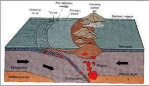
Geologi Gunung Betung
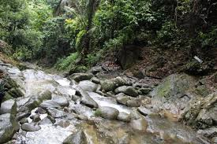
🌊 Pola Aliran Sungai
Pola aliran sungai di sekitar Gunung Betung adalah radial, yaitu sungai mengalir menyebar dari satu titik pusat ke segala arah mengikuti lereng gunung.
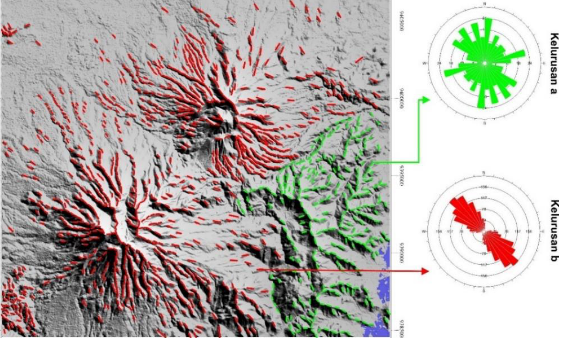
📏 Pola Kelurusan
Pola kelurusan yang berkembang cenderung baratlaut–tenggara (NW–SE), mengikuti arah struktur regional yang dipengaruhi oleh Sesar Semangko. Hal ini terlihat dari arah lembah dan pembelokan sungai.
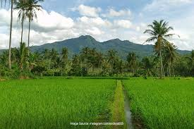
⛰️ Tahapan Bentang Alam
Bentang alam Gunung Betung termasuk tahap muda hingga dewasa, karena bentuk gunung masih jelas tetapi sudah mulai mengalami erosi di beberapa bagian lereng.
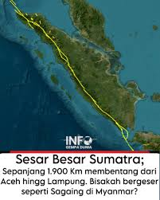
🌍 Pengaruh Struktur Sesar
Struktur utama yang memengaruhi adalah Sesar Semangko (segmen barat), yang mengontrol arah lembah, pola sungai, dan bentuk topografi di sekitar gunung.
💎 Tekstur & Struktur Batuan
- Sieve texture: Mengindikasikan terjadinya pencampuran magma pada kedalaman tertentu sebelum erupsi.
- Zoning: Menunjukkan adanya perubahan komposisi mineral penyusun batuan saat proses pendinginan magma.
- Glomerocryst: Kumpulan kristal-kristal yang tumbuh bersama membentuk agregat.
- Amigdaloidal: Struktur rongga bekas gas (vesikuler) yang telah terisi oleh mineral sekunder.
- Ofitik: Tekstur di mana kristal besar piroksen membungkus kristal-kristal kecil plagioklas.
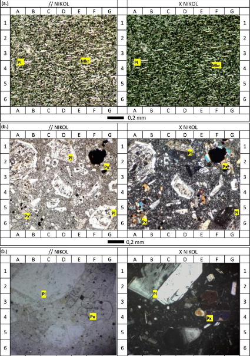
🌋 Vulkanostratigrafi
Gunung Betung tersusun oleh lapisan-lapisan hasil letusan gunungapi, yang berasal dari satu atau beberapa pusat erupsi. Setiap lapisan (atau fasies) mencerminkan fase aktivitas yang berbeda dalam sejarah pembentukan gunung, mulai dari aliran lava masif hingga endapan jatuhan piroklastik yang tersebar luas.
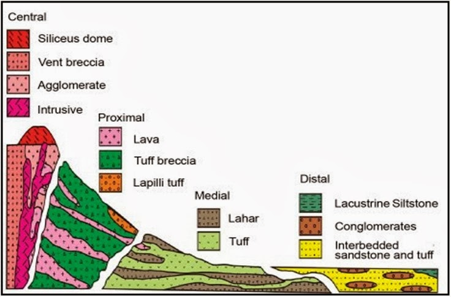
Potensi Pariwisata
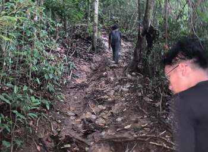
🌄 Wisata Pendakian
Gunung Betung dikenal sebagai gunung yang relatif ramah bagi pendaki pemula karena jalurnya tidak terlalu ekstrem dan masih alami dengan dominasi tanah serta akar pohon. Dengan ketinggian sekitar 1.240 mdpl, pendakian di gunung ini memberikan pengalaman menjelajah alam tanpa tingkat kesulitan yang terlalu tinggi, sehingga cocok sebagai pintu awal bagi masyarakat yang ingin mencoba wisata gunung di Lampung.
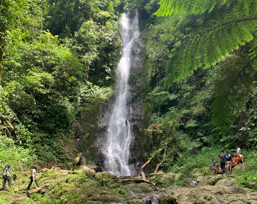
💧 Wisata Air Terjun
Di kawasan Gunung Betung terdapat banyak air terjun yang tersebar di sekitar lerengnya, menciptakan daya tarik visual yang kuat bagi wisatawan. Keberadaan air terjun ini dipengaruhi oleh bentuk lereng dan kondisi batuan yang membuat aliran air jatuh secara alami, menghasilkan pemandangan perpaduan antara air, tebing, dan hutan yang masih asri serta relatif mudah dijangkau.
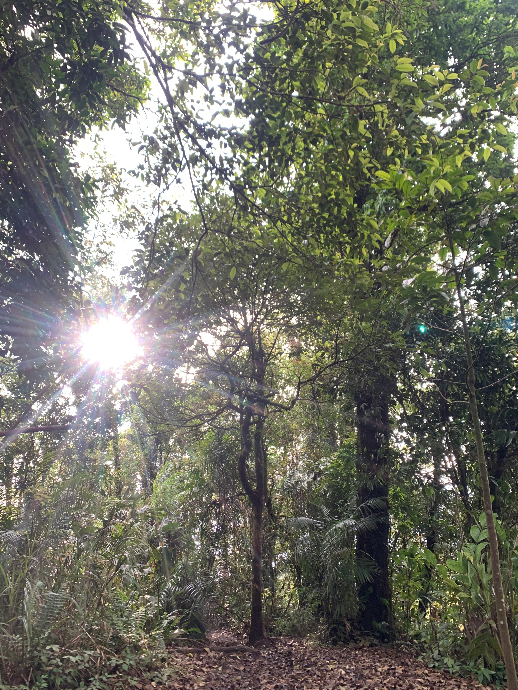
🌳 Wisata Hutan Tropis
Gunung Betung berada dalam kawasan Tahura Wan Abdul Rachman yang memiliki hutan tropis lebat dengan keanekaragaman flora dan fauna yang tinggi. Lingkungan ini menawarkan udara yang sejuk dan suasana alami yang masih terjaga, sehingga cocok untuk kegiatan wisata alam sekaligus edukasi tentang pentingnya menjaga ekosistem.
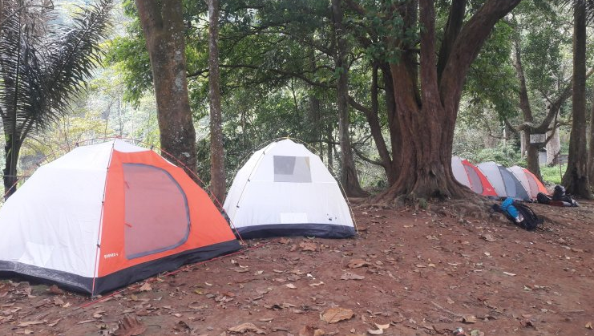
🏕️ Camping Ground
Selain pendakian, kawasan Gunung Betung juga sering dimanfaatkan sebagai lokasi camping oleh pengunjung yang ingin menikmati suasana alam terbuka. Lanskap gunung yang luas dengan pemandangan hutan dan perbukitan memberikan pengalaman berkemah yang tenang dan menyegarkan, menjadikannya pilihan menarik untuk kegiatan rekreasi, healing, maupun wisata bersama keluarga.